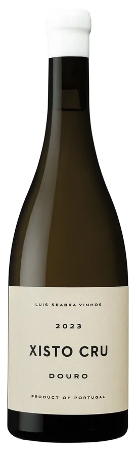
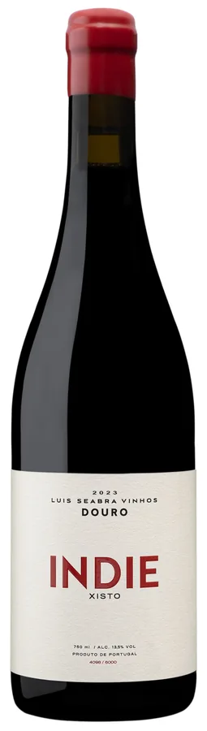
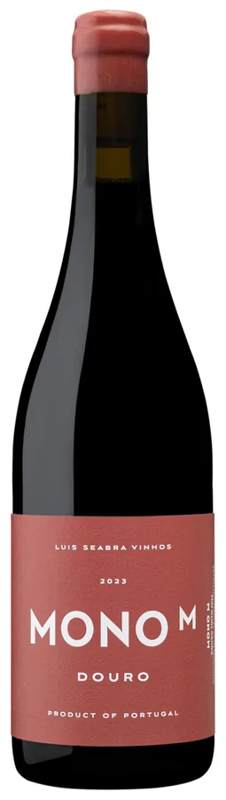
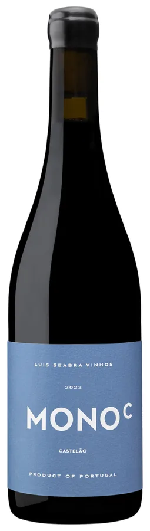
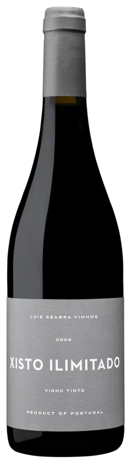
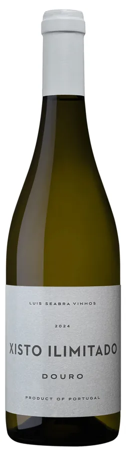
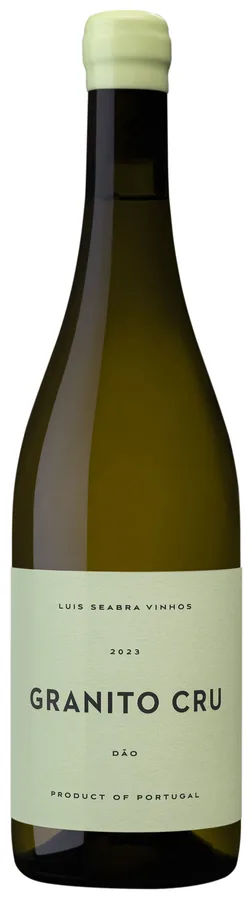
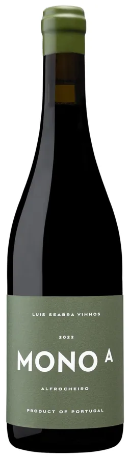
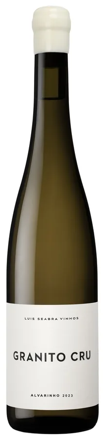

Depois de uma década a fazer vinho na Niepoort, Luís Seabra montou a sua própria adega em 2013 para provar que o Douro também dá vinhos frescos e elegantes.
Trabalha vinhas velhas, pequenas e remotas, escolhidas pelo solo. Intervenção mínima da terra à garrafa: leveduras indígenas, fermentação em madeira, aço inox só quando é indispensável. A série Cru nasceu em 2013 e organiza-se por vinha, não por casta.









Envio para Portugal continental em 48 h · Europa em 5 dias úteis
As vinhas estão em Alvites e Meda, no Douro Superior: altitude, solos de xisto e cepas que nunca souberam o que é rega. É daqui que saem os Xisto Cru e os Ilimitado.
Uma parcela em Vila Nova de Tazém, no sopé da serra mais alta de Portugal continental. Clima fresco, granito e brancos de linha tensa.
Do Vinho Verde sai apenas o Granito Cru Alvarinho, dos mais procurados da casa. Granito, foudre e nenhuma pressa.
Recebemos na adega para provar a gama completa, incluindo garrafas que não saem daqui. Escreva-nos com a data e o número de pessoas.
Avisamos quando abre cada colheita. Duas ou três vezes por ano, nada mais.